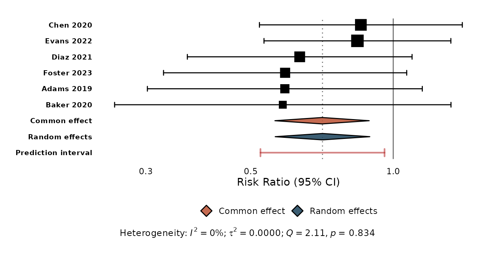
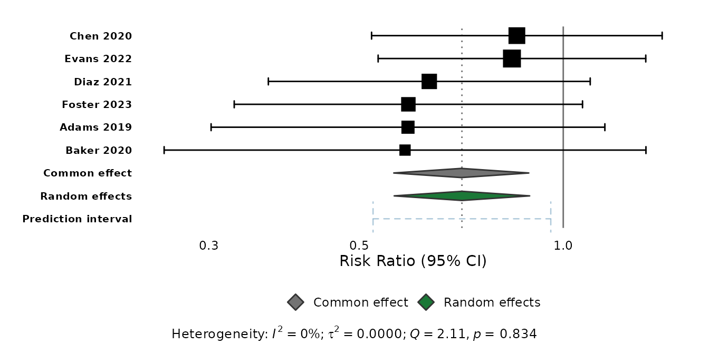
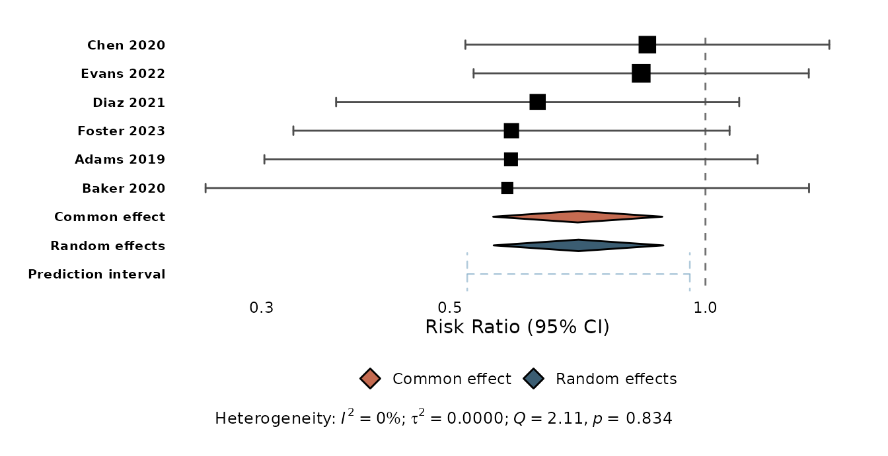
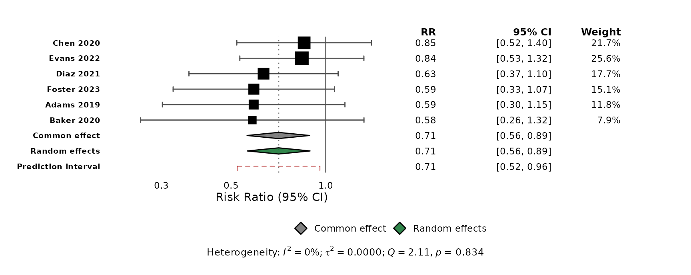
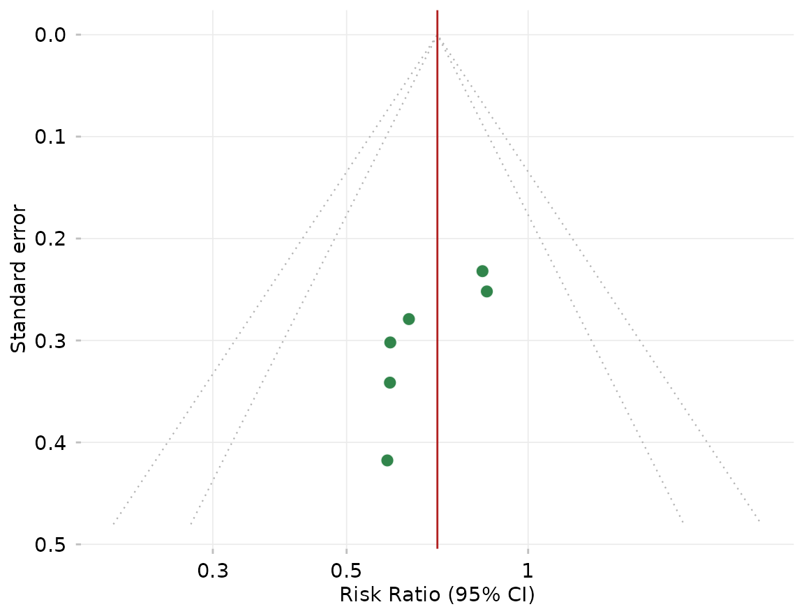

ggforest() and ggfunnel() assemble several
layers for you — study confidence intervals, summary diamonds, a
prediction interval, reference lines, funnel points and contours. You
restyle any of them with a matching *_args argument: a
named list of arguments passed straight to the underlying geom.
This is the intended way to change those elements. Adding another
geom_forest_*() layer to a ggforest() plot
does not restyle the built-in one — it draws a
second layer over every row.
library(meta)
#> Loading required package: metabook
#> Loading 'meta' package (version 8.5-0).
#> Type 'help(meta)' for a brief overview.
dat <- data.frame(
study = c("Adams 2019", "Baker 2020", "Chen 2020",
"Diaz 2021", "Evans 2022", "Foster 2023"),
event.e = c(12, 8, 25, 18, 30, 15), n.e = c(120, 90, 200, 150, 250, 130),
event.c = c(20, 14, 30, 28, 35, 25), n.c = c(118, 92, 205, 148, 245, 128)
)
m <- metabin(event.e, n.e, event.c, n.c,
data = dat, studlab = study, sm = "RR")The prediction interval
predict_args controls the prediction interval —
colour, linetype, linewidth,
alpha, and the end-cap size cap_width:
ggforest(m, predict_args = list(
cap_width = 0.1, colour = "firebrick", linewidth = 0.8, linetype = "solid"
))
Summary diamonds
Recolour the diamonds with diamond_colours — a named
vector keyed by "common", "random",
"subgroup_common", "subgroup_random" — and
restyle their border or transparency with diamond_args:
ggforest(m,
diamond_colours = c(common = "grey45", random = "#1B7837"),
diamond_args = list(colour = "grey20", alpha = 1)
)
Study intervals and reference lines
ci_args styles the study confidence intervals and their
weight-proportional squares (including point_size_range).
ref_args styles the null-effect line, and
consensus / consensus_args control the dotted
pooled-estimate line:
ggforest(m,
ci_args = list(colour = "grey30", point_size_range = c(1, 5)),
ref_args = list(linetype = "dashed"),
consensus = FALSE
)
Everything together
The styling arguments combine freely, and work with the
meta::forest()-style table columns too:
ggforest(m, columns = TRUE,
predict_args = list(cap_width = 0.1, colour = "firebrick"),
diamond_colours = c(common = "grey45", random = "#1B7837"),
ci_args = list(colour = "grey30")
)
Funnel plots
ggfunnel() follows the same pattern with
point_args (the study points), contour_args
(the pseudo confidence-interval contours), and ref_args
(the vertical reference line):
ggfunnel(m,
point_args = list(size = 3, fill = "#1B7837"),
contour_args = list(colour = "grey70", linetype = "dotted", level = c(0.95, 0.99)),
ref_args = list(colour = "firebrick")
)
See also
-
vignette("getting-started")— a tour of the package. -
vignette("from-meta-forest")— coming frommeta::forest(). -
?ggforestand?ggfunnel— the full list of styling arguments.